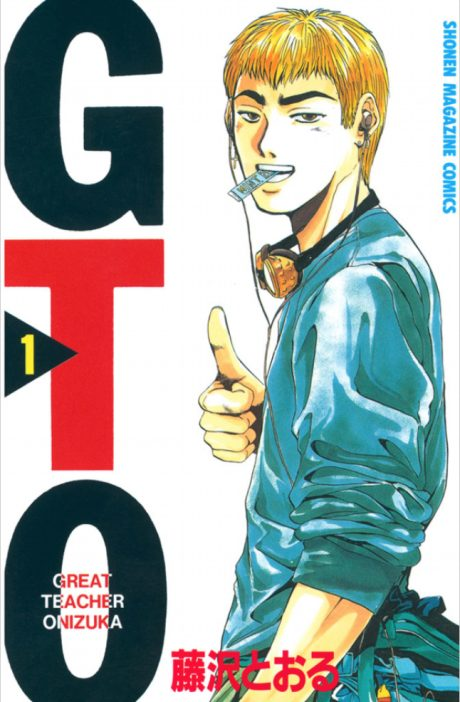

Manga continues fromCh. 107
Anime
Manga continues fromCh. 107
Anime
MangaGTO: Great Teacher Onizuka
GTO
AniList8.4
Animeter—
Episodes43 ep
MangaCh. 107
Is it worth pushing through?
Built from what visitors report across all 43 episodes.
Loading reports…Checking what other people said about this one.
Sign in with your email at the top of the page to add your report.